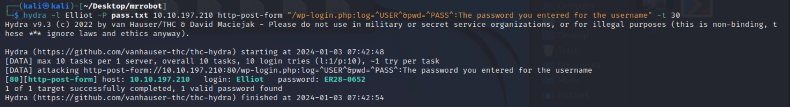

Mr Robot CTF
2024-01-03
Na początku zadnia użyłem narzędzia nmap do przeskanowania adresu IP. Jak widać na załączonym obrazku pokazało mi to że otwarte są porty odpowiedzialne za stronę internetową.
Po przeglądnięciu bardzo ładnej aczkolwiek mało użytecznej głównej strony postanowiłem poszukać głębiej w takich podstronach jak robots, co dało większe rezutalty.
Po przejściu na key-1-of-3.txt jak łatwo można się domyśleć udało się odkryć pierwszą z 3 flag ukrytą w tych zadaniu.

Następne poprzez polecenie strings wyświetliłem zawartość pliku fsocity.disc. Z jakiegoś powodu spodziewałem się dużej ilości nie czytelnych znaków ku mojemu zaskoczeniu zobaczyłem ogromną listę bardziej i mniej czytelnych słów, wyglądało to jak potencjalny słownik z hasłami aczkolwiek na ten moment nie widziałem zastosowania.
Wróciłem do dalszego eksplorowania strony internetowej a pomógł mi przy tym gobuster który w szybki sposób znalazł kilka podstron
Z listy tych wszystkich podstron najbardziej zaciekawił mnie panel do logowania na wordpressa dzięki któremu spróbuje włamać się po przez atak brute force.
Oczywiście narzędziem które posłuży do tego będzie hydra, jak login próbuje słowa Elliot które jest imieniem głównego bohatera w serialu 'Mr Robot' a lista haseł będzie plik fsociety o którym pisałem wyżej.
Niestety plik ten zawierał zbyt dużą ilość słów także po dokładnym przejrzeniu go postanowiłem posortować i usunąć powtarzające się linie
I tak o to udało zdobyć się hasło do konta Elliot.
Po wejściu na stronę wkleiłem kod php-reverse-shell w miejscu themes/twentyfifteen/archive.php oraz odpaliłem nasłuchiwanie na porcie 53
Po uzyskaniu dostępu odnalazłem plik z 2 flagą aczkolwiek tylko robot miał uprawnienia to odczytu tego, ale obok tego był blik z hashem hasła do konta robota
Do odhashowania hasła użyłem narzędzia john oraz znowu pliku fsocity.
Po zalogowaniu na konto robot mogłem zobaczyć zawartość pliku jakim była flaga.

Podpowiedzią do ostaniej flagi było pojawiające się już w tym zadaniu słowo nmap, gdzie rzeczywiście ukryta została ostania flaga.